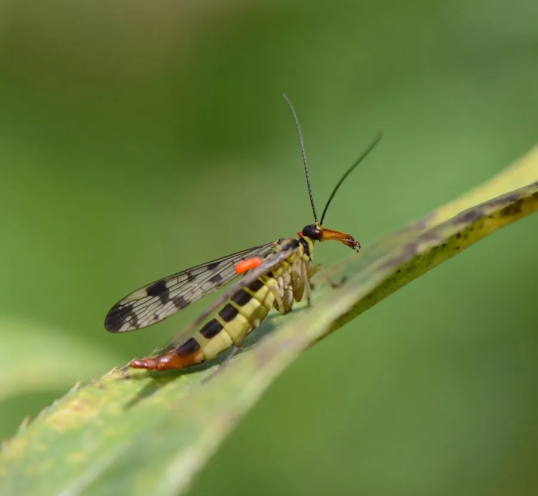

昆虫 · 动物界
中华蝎蛉 Panorpa sinica

翅面有黑色斑点、雄虫腹部末端上弯如蝎尾的细长昆虫，栖于湿润林下，捕食小虫与腐肉。
- 分类
- 门节肢动物门纲昆虫纲目长翅目科蝎蛉科属蝎蛉属
- 栖息环境
- 湿润阔叶林下、溪谷边、阴湿草丛与腐殖土表层
- 地理分布
- 中国华北、华中、西南的山地林区
- 保护级别
- 常见种，无保护级别；对湿度敏感，依赖完整林地
物种志
中华蝎蛉的成虫体长约一点五至二厘米，体细长，黄褐色，头部向前延伸成短喙，咀嚼式口器位于喙端。两对狭长的膜质翅上有黑色斑点，静止时平叠在背上。雄虫腹部末端膨大并向上弯曲，形似蝎子的尾巴，但并无毒刺，蝎蛉之名由此而来。雌虫腹部末端较尖，用于产卵。
它分布于中国华北、华中和西南的山地林区，栖息在湿润的阔叶林下、溪谷边和草丛中。成虫在夏季活动，行动缓慢，喜在叶片上停歇。它食性杂，捕食小型昆虫，也取食腐肉和花蜜，雄虫求偶时会献上猎物或唾液分泌物作为礼物。幼虫生活在潮湿土壤中，取食腐殖质。蝎蛉对湿度要求高，森林砍伐和水源污染会使其数量下降，是湿润林地的指示昆虫。
形态与习性
- 体长约一点五至二厘米，体细长
- 翅两对狭长膜翅，具黑色斑点
- 雄虫尾部腹部末端上弯如蝎尾，无毒刺
- 食性捕食小虫，也食腐肉与花蜜
- 求偶雄虫献猎物或唾液分泌物为礼
- 幼虫生活于潮湿土壤，取食腐殖质
趣味知识
- 雄虫尾巴翘得像蝎子，其实那只是交配用的构造，并不会蜇人。
- 雄虫求偶要带礼物，一份猎物或一滴唾液，礼物越厚越容易得到青睐。
- 它只在阴湿的林下活动，看见它就知道那片林子还很湿润。